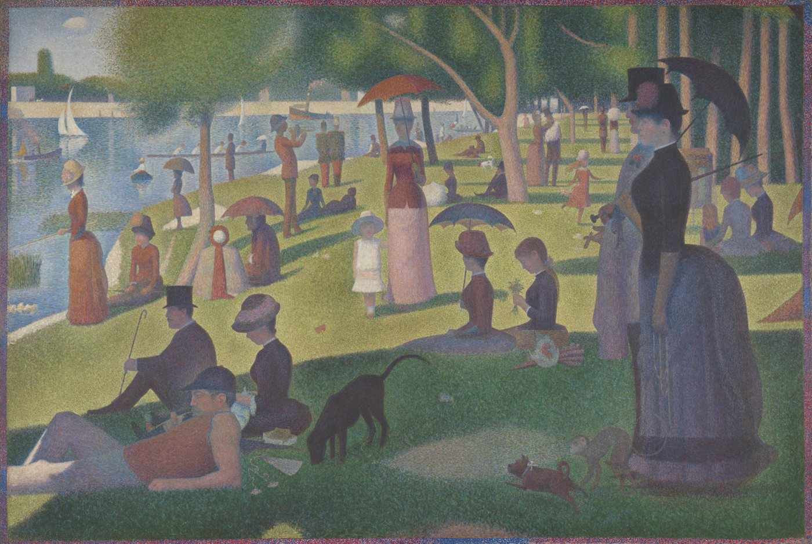

How does an artwork become data?
And what do the numbers leave out?
Four parts, one hour.
Data, visualization, tools
What data is, what a chart does, who makes data art, and with what
Art data
Questions, sources, cleaning, images as numbers, how the eye reads
Live exercise, two rounds
You rate one painting, hear its context, rate it again; we compare you with a machine; discussion with Kerem
Midterm
Brief, the 150-word paragraph, forms for SUSAM
Data is a record of an observation.
Someone looked, decided what mattered, and wrote it down.
| artist | born–died | title | date | medium | h × w (cm) | id |
|---|---|---|---|---|---|---|
| Georges Seurat | 1859–1891 | A Sunday on La Grande Jatte — 1884 | 1884–86 | Oil on canvas | 207.5 × 308.1 | 1926.224 |
What the row cannot hold
- standing in front of it, three metres wide
- two years of placing dots, and the border added later
- who the people on the island were
Label: Art Institute of Chicago collection record, via its public API.
A visualization maps data to marks and channels.
Share of works by women among MoMA’s acquisitions, by decade (%)
Data: MoMA Collection (GitHub, CC0), 160,700 records; first listed artist with a recorded gender. 2020s = 2020–2026.
Six forms, all older than computers.
Bars
compare amounts
W. E. B. Du Bois and students, Paris, 1900
Timeline
show lives and periods
Joseph Priestley, A Chart of Biography, 1765
Polar area
parts of a whole over time
Florence Nightingale, 1858
Flow
movement and loss
Charles Joseph Minard, 1869
Network
who is connected to whom
Alfred H. Barr Jr., 1936; Mark Lombardi, 1990s
Tree
order knowledge into branches
Diderot and d’Alembert, Encyclopédie, 1751
When the chart becomes the work.
Federica Fragapane
The Stories Behind a Line, 2018The routes of six asylum seekers to Italy, drawn as delicate lines with their own stories.
Giorgia Lupi & Stefanie Posavec
Dear Data, 2014–15A year of weekly hand-drawn postcards about their own small data, sent between New York and London.
dear-data.com ↗Nadieh Bremer & Shirley Wu
Data Sketches, from 2016Monthly experiments in custom, hand-coded visualization; later a book with the process behind each one.
datasketch.es ↗Lev Manovich, Moritz Stefaner et al.
Selfiecity, 20143,200 Instagram selfies from five cities, sorted and plotted by pose, mood and face.
selfiecity.net ↗Aaron Koblin
The Sheep Market, 200610,000 sheep drawn by Amazon Mechanical Turk workers, each paid $0.02 to “draw a sheep facing to the left”.
thesheepmarket.com ↗Refik Anadol
Unsupervised, MoMA, 2022–23A machine learning model trained on MoMA’s collection data, shown as a moving image in the museum’s lobby.
refikanadol.com ↗Nathalie Miebach
Weather sculpturesStorm and weather data translated into hand-built sculptural objects.
nathaliemiebach.com ↗Burak Arıkan
Networks of Dispossession, 2013Maps of capital and power in Istanbul, made collectively on Graph Commons for the 13th Istanbul Biennial.
graphcommons.com ↗What do people make it with?
Positions are a rough judgment from practice, not measured data. Click a tool.
From chart to artwork.
This code is running on the right (p5.js)
Each bloom is a decade of MoMA acquisitions. Size: works acquired. 100 strokes = 100%. Blue strokes: share by women.
Data: MoMA Collection (GitHub, CC0). The 1960s bloom is huge because of the Mies van der Rohe Archive.
Start with a question you cannot answer yet.
- Do viewers agree on whether a painting is calm or tense?data: a survey of this room
- Has MoMA collected more work by women since 1989?data: MoMA collection, GitHub
- Where do Istanbul Biennial artists come from, and has that changed?data: İKSV biennial archive, by hand
- Which museums are visible in the open data that trains AI?data: Wikidata
- How do different museums label the same artist?data: wall labels you photograph
Art data is more than metadata.

Metadata
who, when, where, what it is made of
Pixels
color, light, edges of a photograph of the work
Text
wall labels, reviews, catalogues, interviews
People
artists, dealers, collectors, curators and their networks
Market
sales, prices, auction records
Audience
visits, reactions, your own survey
Where to find art data.
| Source | What you get | Watch out |
|---|---|---|
| MoMA collectiongithub.com/MuseumofModernArt | 160,700 works as CSV: artist, nationality, gender, dates, acquisition year | MoMA says much of it is “not curatorially approved”. One archive is 10% of all rows. |
| Met Open AccessCSV on GitHub + Collection API | Objects with culture, period, tags; public-domain images | A very large file; “culture” and “period” mix very different kinds of category. |
| Art Institute of Chicagoapi.artic.edu | About 133,000 works, styles, dominant colors, IIIF images | Style labels are inconsistent: “19th century” and “nineteenth century” both exist. |
| Rijksmuseumdata.rijksmuseum.nl | Collection data and images through its data services | Read the current access rules and licenses before you build on it. |
| Wikidataquery.wikidata.org | Artists, works, places and movements linked together; download as CSV | Written by volunteers; coverage is very uneven between museums. |
| Your own surveyGoogle Forms, a notebook | Exactly the question you want to ask | Small and shaped by who answers. Do not collect names you do not need. |
Every collection is a record of what someone chose to keep.
Who is in the data decides what the chart can say.
Artworks linked to each museum in Wikidata
Tate’s collection records
by one artist: J. M. W. Turner. In 1856, 37,711 of his works arrived at once.
Wikidata query, 26 September 2026 (collection or location; 5 of the Istanbul museum’s 8 records are works). Tate Collection data (CC0), 69,201 records, 39,389 by Turner.
Metadata is an interpretation.
Real “Date” values from a random sample of 3,000 MoMA records → a rule that keeps the first year
- (c. 1915)→1915circa
- early 1930s→1930a decade, not a year
- 1884-86→1884range, hyphen
- 1962–66→1962range, en dash
- 1953—1956→1953range, em dash
- 1971 (printed 2014)→1971made vs printed
- Published 1926 (frottage 1925)→1926rule picks publication
- Before 1899→1899only an upper limit
- n.d.→—no date
Keep the raw column.
Never overwrite what the museum wrote.
Log every decision.
“First year in the text” is a rule you chose, write it down.
Count what you drop.
The rows you cannot use are part of the result.
Same image, three methods, different numbers.
Seurat, A Sunday on La Grande Jatteor drop one on this slide
Color
Light
mean brightness, 0 black · 100 white
Structure
of pixels count as an edge
A chart is a claim.
Guess: what percent of A (blue) is B (orange)? The same two values, five ways.
B = –% of A
Ranking from William S. Cleveland and Robert McGill, “Graphical Perception”, Journal of the American Statistical Association, 1984.
Rate one painting.
Drop the image here, or
[Artist, Title, Date. Collection. Credit]
or open
[short link]
No names. Two minutes.
The gap is not an error. It is the discussion.
Now, the context.
- who made it, and how[Kerem]
- when, where, for whom[Kerem]
- what happened to it[Kerem]
- what the image alone does not show[Kerem]
Rate it again.
same link
[short link]
Same four sliders. Has anything moved?
Did context change what we saw?
Three questions.
Form
Where did the class and the machine diverge, and why?
Meaning
What did no slider capture?
Context
The artist, the labor, the period: what did we leave out?
An individual data visualization about art or the art world.
Question
A real question you cannot answer yet.
Data
What, from where, how much. Collected by you, or an open collection like MoMA or the Met.
Form
How it will stand in SUSAM, and why this kind of visualization: print, screen, object, drawing.
[Individual project — confirm with Kerem]
150 words, three moves.
I ask a question about art or the art world. To answer it, I will use what data, from where, how much. I will count, compare or map it, because why this method. At SUSAM I will show it as a print, a screen, an object or a drawing, because why this form fits.
yours: 0 words
Example
Has the Museum of Modern Art collected more work by women since the Guerrilla Girls counted the Met in 1989? I will use MoMA’s open collection data on GitHub: about 160,000 records, each with the artist’s recorded gender and the year the work entered the collection. I will count acquisitions by decade and keep records with no recorded gender as their own group, because who stays “unknown” is part of the answer. One archive, the Mies van der Rohe Archive, arrived in the 1960s and makes up almost a third of that decade, so I will show it separately. At SUSAM I will show a large hand-drawn print on paper: one column per decade, every hundred works as one short pencil stroke, works by women in blue. The wall label will name what the data cannot show: collectives, identities the records do not hold, and works the museum never bought.
0 wordsquestiondataform
Four ways to show it at SUSAM.
Guerrilla Girls, Do Women Have to Be Naked to Get into the Met. Museum?poster, 1989
W. E. B. Du Bois and students, The Georgia Negrohand-drawn charts, Paris, 1900
Screen
Refik Anadol, UnsupervisedMoMA lobby, 2022–23
Aaron Koblin, Flight Patternsanimated flight paths, 2005
Object
Hans Haacke, MoMA Polltwo transparent ballot boxes, 1970
Nathalie Miebachsculptures built from weather data
Drawing
Giorgia Lupi and Stefanie Posavec, Dear Datapostcards, 2014–15
Mark Lombardi, Narrative Structuresgraphite network drawings, 1990s
Starter kit.
Collect
- MoMA collection GitHub CSV
- Met Open Access CSV + API
- Art Institute of Chicago API
- Wikidata query service
- Google Forms your own survey
Clean and draw
- Google Sheets, OpenRefine cleaning
- Datawrapper, RAWGraphs, Flourish no code
- Observable Plot a little code
- p5.js, D3.js creative code
- paper and pencil always
Read
- Amanda Wasielewski, Computational Formalism MIT Press, 2023
- Cleveland & McGill, “Graphical Perception” JASA, 1984
- Johanna Drucker, “Humanities Approaches to Graphical Display” DHQ, 2011
Paragraph due Monday 12 October, 23:59.